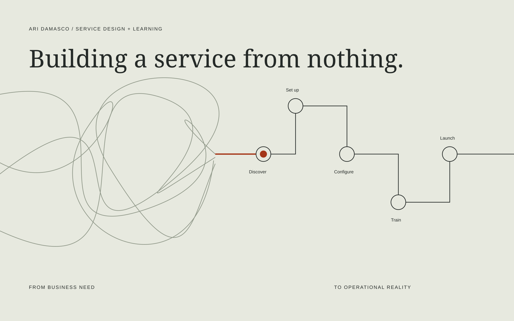

Service design / Learning enablement
Building a service
from nothing.
From business need to operational reality.
I turned an undefined implementation and training offering into a structured service—connecting customer discovery, workflows, learning, and launch.
Explore the service ↓
01 / The business need
One connected solution.
A gap in the experience.
At the time of this work, Momentive owned MIP Fund Accounting. Microix was a separate company offering an add-on built specifically for MIP. Differences in service quality contributed to customer retention challenges.
Momentive knew it wanted to deliver Microix implementation and training in-house. The service model had yet to be defined.
The mandate
Define what the service should be—and build what it needs to work.
I had full authority to shape the offering, delivery workflows, curriculum, and supporting materials. My work connected the operational process with the learning people needed to use it.
02 / Explore the service
Five stages.
One coherent experience.
Select a stage to see how customer actions, service design, and practical materials fit together.
Representative reconstruction: this blueprint illustrates the service logic. Stage details and readiness gates are fictional examples, not a reproduction of an employer’s internal process.
03 / The learning strategy
Same workflow.
Different responsibilities.
The original work included courses for three roles. These fictional pathways show the design principle: teach what each person must decide and do.
04 / Inside the work
From a plan to something usable.
Original materials included kickoff and discovery presentations, approval-level instruction, role-based courses, and user guides. These three new samples demonstrate the thinking behind that work.
Fictional sample / 01
Discovery worksheet ↗
Turn a conversation into workflow decisions.
Fictional sample / 02
Role-based learning pathway ↗
Align instruction, practice, and evidence of readiness.
Fictional sample / 03
Launch checklist ↗
Make ownership and readiness visible before launch.
All samples are independently reconstructed fictional examples created for this portfolio. They contain no proprietary screenshots, employer source materials, real customer information, or brand assets.
05 / What this demonstrates
More than a course.
A service people could deliver.
The work brought service design, business process development, instructional design, and documentation into one offering.
The result was a structured in-house implementation and training service. No retention improvement, adoption rate, or other measured business outcome is claimed here.